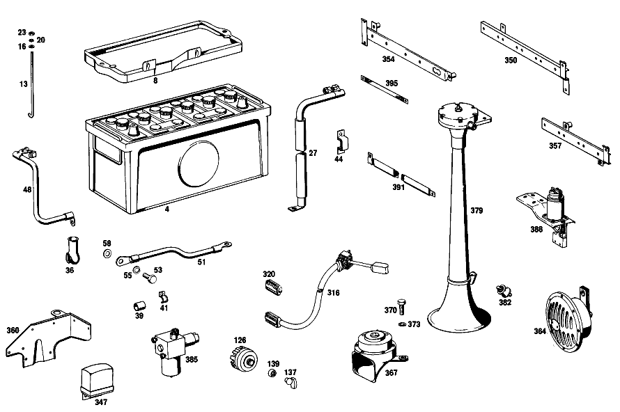

| № | Артикул | Название | Кол. | Примечание | Ограничение |
|---|---|---|---|---|---|
| 4 | A 003 541 00 01 | аккумуляторная батарея | 1 | 12V/88 AH | |
| 8 | A 100 540 02 23 | MOUNTING FRAME | 1 | ||
| 13 | A 100 541 00 24 | БОЛТ НАТЯЖНОЙ | 2 | ||
| 13 | A 100 541 00 24 | БОЛТ НАТЯЖНОЙ | 3 | ||
| 16 | N 000125 006421 | Шайба | 2 | ||
| 16 | N 000125 006449 | Шайба | 2 | ||
| 16 | N 000125 006449 | Шайба | 3 | ||
| 20 | A 094 990 68 10 | Пружинное кольцо | 2 | ||
| 20 | A 094 990 68 10 | Пружинное кольцо | 3 | ||
| 23 | N 000934 006013 | Гайка | - | ||
| 23 | N 304032 006008 | Шестигранная гайка | 2 | ||
| 23 | N 304032 006008 | Шестигранная гайка | 3 | ||
| 27 | A 100 540 00 30 | ПЛЮС. ПРОВОД | 1 | Рулевое управление: ВлевоАвтоматическая коробка переключения передач | |
| 36 | A 111 546 00 35 | КОЛПАЧОК | - | ||
| 36 | A 116 546 01 35 | Защитный колпачок | 1 | ||
| 39 | A 180 997 15 82 | ШЛАНГ | 2 | ||
| 41 | A 112 995 01 20 | ХОМУТ | 3 | ПРОВОД СТАРТЕРА НА ЛОНЖЕРОНЕ Рулевое управление: ВлевоАвтоматическая коробка переключения передач | |
| 44 | A 000 995 12 10 | ХОМУТ | 1 | STARTING CABLE TO OIL DIPSTICK GUIDE TUBE | |
| 48 | A 100 540 00 31 | Электрический провод | 1 | Рулевое управление: ВлевоАвтоматическая коробка переключения передач | |
| 51 | A 100 540 01 31 | ПРОВОД МАССЫ | 1 | Рулевое управление: ВлевоАвтоматическая коробка переключения передач | |
| 53 | N 000933 010238 | Винт | - | Рулевое управление: ВлевоАвтоматическая коробка переключения передач | |
| 53 | N 304017 010028 | Винт с 6-гранной головкой | 2 | M10X20\-8.8 Рулевое управление: ВлевоАвтоматическая коробка переключения передач | |
| 53 | N 304017 010028 | Винт с 6-гранной головкой | 1 | M10X20\-8.8 Рулевое управление: ВправоКоробка передач | |
| 55 | N 912004 010102 | Пружинное кольцо | 2 | Рулевое управление: ВлевоАвтоматическая коробка переключения передач | |
| 55 | N 912004 010102 | Пружинное кольцо | 1 | Рулевое управление: ВправоАвтоматическая коробка переключения передач | |
| 58 | N 000125 010518 | Шайба | - | Рулевое управление: ВлевоАвтоматическая коробка переключения передач | |
| 58 | N 000125 010532 | Шайба | 2 | Рулевое управление: ВлевоАвтоматическая коробка переключения передач | |
| 58 | N 000125 010532 | Шайба | 1 | Рулевое управление: ВправоАвтоматическая коробка переключения передач | |
| 70 | A 004 545 85 28 | - ШТЕКЕР | - | ||
| 70 | A 008 545 20 28 | - Нижняя часть корпуса | 2 | ОДНОКОНТАКТ.; 1\-PIN | |
| 73 | A 002 545 49 28 | - ШТЕКЕР | - | ||
| 73 | A 008 545 37 28 | - Сцепление, механическое | 14 | ДВУХПОЛЮСНЫЙ; 2\-PIN | |
| 76 | A 000 545 32 28 | - ШТЕКЕР | 14 | ЧЕТЫРЁХПОЛЮСНЫЙ [008] UP TO CHASSIS 000641 EXCEPT FOR 000601,000615,000621,000637-000640 | |
| 81 | A 005 545 13 28 | - ШТЕКЕР | - | ||
| 81 | A 006 545 80 28 | - CONTACT SUPPORT | NB | ШЕСТИПОЛЮСНЫЙ; 6\-PIN | |
| 84 | A 001 545 48 28 | - ШТЕКЕР | - | ||
| 84 | A 009 545 26 28 | - Сцепление, механическое | 7 | ДЕСЯТИПОЛЮСНЫЙ; 12\-PIN [008] UP TO CHASSIS 000641 EXCEPT FOR 000601,000615,000621,000637-000640 | |
| 88 | A 002 545 31 28 | - ШТЕКЕР | 1 | 12\-КОНТАКТН. [402] БОЛЬШЕ НЕ ПОСТАВЛЯЕТСЯ [008] UP TO CHASSIS 000641 EXCEPT FOR 000601,000615,000621,000637-000640 | |
| 91 | A 183 997 01 81 | - КАБ. ВТУЛКА | 1 | ||
| 93 | A 186 997 07 81 | - втулка | 1 | [402] БОЛЬШЕ НЕ ПОСТАВЛЯЕТСЯ | |
| 96 | A 111 997 13 81 | - резиновая втулка | 1 | ||
| 100 | A 110 997 04 81 | - втулка | 1 | ||
| 103 | A 100 997 05 81 | - Проходная втулка | 1 | ||
| 108 | A 108 546 00 85 | - Защитная труба | 2 | ||
| 111 | A 000 545 71 28 | - ШТЕКЕР | - | ||
| 111 | A 002 545 24 28 | - ШТЕКЕР | 1 | ДВУХПОЛЮСНЫЙ [008] UP TO CHASSIS 000641 EXCEPT FOR 000601,000615,000621,000637-000640 | |
| 114 | A 000 544 04 86 | - ШТЕКЕР | 2 | ||
| 116 | A 000 546 34 40 | - КАБЕЛЬНЫЙ НАКОНЕЧНИК | 1 | ||
| 119 | A 000 546 44 40 | - КАБЕЛЬНЫЙ НАКОНЕЧНИК | 2 | [008] UP TO CHASSIS 000641 EXCEPT FOR 000601,000615,000621,000637-000640 | |
| 123 | A 100 540 00 50 | - БЛОК ПРЕДОХРАНИТЕЛЕЙ | 1 | ||
| 126 | A 000 545 20 04 | - Переключатель | 1 | (ВЫКЛЮЧАТЕЛЬ СВЕТА) Рулевое управление: ВправоАвтоматическая коробка переключения передач | |
| 129 | A 000 545 11 12 | - ВЫКЛЮЧАТЕЛЬ | 1 | (FOOT DIMMER SWITCH) | |
| 132 | A 000 545 82 34 | предохранитель | - | ||
| 132 | N 072581 008101 | Плавкая вставка | 14 | 8 A | |
| 134 | N 072581 025100 | ПРЕДОХРАНИТЕЛЬ | 6 | 25 A | |
| 137 | A 110 545 11 37 | Поворотная кнопка | 1 | [402] БОЛЬШЕ НЕ ПОСТАВЛЯЕТСЯ | |
| 139 | A 110 545 02 72 | Декоративная розетка | 1 | ||
| 143 | A 000 546 19 41 | СОЕДИНИТЕЛЬ ПРОВОДОВ | 2 | 5\-POLE;TOEBOARD AND RIGHT SIDE PANELLING | |
| 147 | A 100 545 01 40 | ДЕРЖАТЕЛЬ | 1 | ||
| 150 | A 100 542 16 40 | ДЕРЖАТЕЛЬ | 1 | ||
| 173 | A 100 995 06 20 | ХОМУТ | 3 | MAIN CABLE HARNES TO RIGHT CROSS MEMBER AT INSTRUMENT PANEL | |
| 176 | A 112 995 01 20 | ХОМУТ | 1 | MAIN CABLE HARNESS TO BRAKE PEDAL BEARING BRACKET Рулевое управление: ВправоАвтоматическая коробка переключения передач | |
| 180 | A 100 546 00 43 | ДЕРЖАТЕЛЬ | 3 | ГЛАВНЫЙ ЖГУТ ПРОВОДОВ К ПОПЕРЕЧИНЕ ПЕРЕДНЕЙ ПАНЕЛИ | |
| 183 | A 123 995 03 20 | Крепежный хомут | 1 | MAIN CABLE HARNESS TO LEFT CROSS MEMBER AT INSTRUMENT PANEL Рулевое управление: ВлевоАвтоматическая коробка переключения передач | |
| 186 | A 153 995 01 20 | хомут | 1 | BLINKER\-SENDER\-TO\-TOEBOARD/TO\-RIGHTWHEEL\-ARCH\-PANEL MAIN CABLE HARNESS Рулевое управление: ВлевоАвтоматическая коробка переключения передач | |
| 189 | A 136 995 01 35 | хомут | 3 | BLINKER\-SENDER\-TO\-TOEBOARD/TO\-RIGHTWHEEL\-ARCH\-PANEL MAIN CABLE HARNESS Рулевое управление: ВлевоАвтоматическая коробка переключения передач | |
| 191 | A 120 420 02 27 | Т-образный винт | 1 | BLINKER\-SENDER\-TO\-TOEBOARD/TO\-RIGHTWHEEL\-ARCH\-PANEL MAIN CABLE HARNESS Рулевое управление: ВлевоАвтоматическая коробка переключения передач | |
| 194 | A 136 995 00 37 | хомут | 3 | MAIN CABLE HARNESS TO FRONT CROSS MEMBER | |
| 203 | A 000 997 20 81 | Проходная втулка | 2 | CABLE TO SIGNAL HORN THRU RADIATOR COVER PLATE | |
| 206 | A 180 997 08 81 | КАБ. ВТУЛКА | 1 | CABLE TO AIR CONDITIONER SWITCH [402] БОЛЬШЕ НЕ ПОСТАВЛЯЕТСЯ | |
| 209 | A 000 997 30 81 | Проходная втулка | 2 | ПРОВОД К ГЕНЕРАТОРУ [010] UP TO CHASSIS 000758 EXCEPT FOR 000745-000748,000750,000752,000754-000757 | |
| 213 | A 000 546 33 35 | Защитный колпачок | 2 | ||
| 216 | A 112 995 01 20 | ХОМУТ | 2 | ЖГУТ ЭЛЕКТРОПРОВОДКИ ДВИГАТЕЛЯ НА МОТОРНОМ ЩИТЕ | |
| 230 | A 000 988 18 78 | Скоба | 4 | TAIL LAMP CABLE HARNESS AND LUGGAGE COMPARTMENT LAMP CABLE | |
| 233 | A 002 988 48 78 | Скоба | 2 | 2\-POLE CABLE CONNECTOR TO REAR LID | |
| 237 | A 000 542 13 56 | КОРПУС | 1 | ||
| 240 | A 000 542 27 78 | БЛОК ЗОЛОТНИКОВ | 1 | [009] FROM CHASSIS 000642 ALSO INSTALLED ON 000601,000615,000621,000637-000640 | |
| 243 | A 000 542 16 25 | - Поворотный выключатель | 1 | ||
| 247 | A 002 545 26 28 | - ШТЕКЕР | - | ||
| 247 | A 009 545 54 28 | - Сцепление, механическое | 1 | 12\-КОНТАКТН.; 12\-PIN [009] FROM CHASSIS 000642 ALSO INSTALLED ON 000601,000615,000621,000637-000640 | |
| 250 | A 001 542 57 02 | МАНОМЕТР МАСЛА | 1 | ||
| 253 | A 002 542 94 05 | ТЕЛЕТЕРМОМЕТР | 1 | ||
| 256 | A 001 542 02 03 | ИЗМЕРИТЕЛЬ ТОПЛИВА | 1 | [009] FROM CHASSIS 000642 ALSO INSTALLED ON 000601,000615,000621,000637-000640 | |
| 259 | A 000 542 04 72 | ГАЙКА | 1 | ||
| 263 | A 000 542 06 72 | ГАЙКА | 1 | ||
| 267 | A 004 542 18 06 | СПИДОМЕТР | 1 | ||
| 270 | A 000 542 08 56 | - КОРПУС | 1 | ||
| 273 | A 000 544 25 93 | - Ламповый патрон | 4 | ||
| 276 | A 000 542 38 16 | ДАТЧИК ОБОРОТОВ | 1 | С УКАЗАТЕЛЕМ ПЕРЕДАЧИ Рулевое управление: ВлевоАвтоматическая коробка переключения передач | |
| 281 | A 000 542 02 80 | ПРОКЛАДКА УПЛОТНИТЕЛЬНАЯ | 2 | ||
| 283 | A 100 540 00 59 | ШЛАНГ | 1 | ||
| 285 | A 100 540 00 60 | ЭЛ. ПРОВОД | 1 | МАНОМЕТР МАСЛА Рулевое управление: ВлевоАвтоматическая коробка переключения передач | |
| 288 | A 111 997 05 81 | резиновая втулка | 1 | Рулевое управление: ВправоАвтоматическая коробка переключения передач | |
| 291 | A 100 542 10 40 | ДЕРЖАТЕЛЬ | 1 | OIL PRESSURE GAUGE LINE TO COMPRESSED AIR DEVICE Рулевое управление: ВлевоАвтоматическая коробка переключения передач | |
| 294 | A 100 542 01 11 | ЧАСЫ | 1 | ||
| 297 | A 000 545 15 25 | РОЗЕТКА | 1 | [402] БОЛЬШЕ НЕ ПОСТАВЛЯЕТСЯ | |
| 300 | A 000 545 35 09 | Переключатель | 1 | ВЫКЛЮЧАТЕЛЬ СИГНАЛА ТОРМОЖЕНИЯ | |
| 303 | A 111 990 09 40 | Диск | NB | 0.5mm | |
| 307 | A 000 990 92 51 | гайка | 1 | ||
| 310 | A 100 542 02 07 | ВАЛ ГИБКИЙ | - | Рулевое управление: ВлевоАвтоматическая коробка переключения передач | |
| 310 | A 100 542 03 07 | ВАЛ ГИБКИЙ | 1 | 1250 MM Рулевое управление: ВлевоАвтоматическая коробка переключения передач | |
| 313 | A 186 997 04 81 | втулка | - | ||
| 313 | A 110 997 04 81 | втулка | 1 | ||
| 316 | A 001 545 98 24 | ВЫКЛЮЧАТЕЛЬ АВТОМ. | 1 | ВЫКЛЮЧАТ. УКАЗАТ.ПОВОРОТА [015] UP TO CHASSIS 001028 EXCEPT FOR 000096,001021,001024,001026 | |
| 320 | A 002 545 74 28 | - КОРПУС ШТЕК. ГНЕЗДА | 1 | 12\-КОНТАКТН. | |
| 323 | A 000 995 20 20 | ХОМУТ | 1 | ||
| 326 | A 000 542 58 19 | Контактор | 3 | HEATING SYSTEM,COLD STARTING,AND SIGNAL HORN | |
| 326 | A 000 542 58 19 | Контактор | 4 | ||
| 329 | A 001 821 04 51 | ВЫКЛЮЧАТЕЛЬ | 1 | ЗВУКОВОЙ СИГНАЛ ВЫСОКОЙ ИНТЕНСИВНОСТИ | |
| 332 | A 001 545 02 11 | Переключатель | 1 | НОЖНОЙ СТОЯНОЧНЫЙ ТОРМОЗ | |
| 335 | A 001 990 67 51 | ГАЙКА | - | ||
| 335 | A 000 252 03 72 | гайка | 1 | ||
| 338 | N 000137 008204 | Пружинная шайба | - | ||
| 338 | N 000137 008212 | Пружинная шайба | 1 | ||
| 341 | N 912006 008000 | Пружинное кольцо | 1 | ||
| 344 | A 001 545 16 24 | ВЫКЛЮЧАТЕЛЬ АВТОМ. | 1 | ХОЛОДНЫЙ ЗАПУСК | |
| 347 | A 002 154 36 06 | Регулятор-выключатель | - | ||
| 347 | A 002 154 74 06 | Регулятор-выключатель | 2 | ||
| 350 | A 100 540 19 73 | ДЕРЖАТЕЛЬ | 1 | ПОД КРЫШКОЙ ПОД ПРИБОРН. ПАНЕЛЬЮ Рулевое управление: ВлевоАвтоматическая коробка переключения передач | |
| 354 | A 100 540 22 73 | ДЕРЖАТЕЛЬ | 1 | СПРАВА, НА ПЕРЕГОРОДКЕ Рулевое управление: ВлевоАвтоматическая коробка переключения передач | |
| 357 | A 100 540 08 73 | ДЕРЖАТЕЛЬ | 1 | НА ПЕРЕГОРОДКЕ | |
| 360 | A 100 540 06 73 | ДЕРЖАТЕЛЬ | 1 | К ЛОНЖЕРОНУ СПРАВА | |
| 364 | A 003 542 20 20 | Сигнал | 1 | ||
| 367 | A 002 542 28 20 | ЗВУКОВОЙ СИГНАЛ | 1 | НИЗК. ЧАСТ. | |
| 370 | N 000933 010105 | Винт | - | ||
| 370 | N 304017 010019 | Винт с 6-гранной головкой | 2 | M10X25 | |
| 373 | N 912004 010102 | Пружинное кольцо | 2 | ||
| 376 | N 072571 001035 | Хомут | - | ||
| 376 | A 127 995 00 20 | хомут | 1 | ||
| 379 | A 000 542 05 21 | ПНЕВМАТ. ЗВУКОВОЙ СИГНАЛ | 1 | ||
| 382 | A 189 094 00 85 | РЕЗИНОВЫЙ УПОР | 3 | ||
| 385 | A 000 542 01 28 | КЛАПАН | 1 | ||
| 388 | A 100 540 04 97 | КЛАПАН | 1 | Рулевое управление: ВлевоАвтоматическая коробка переключения передач | |
| 391 | A 111 540 00 41 | ГИБКАЯ ПЕРЕМЫЧКА | - | ||
| 391 | A 000 546 07 20 | ГИБКАЯ ПЕРЕМЫЧКА | 1 | FROM ENGINE TO FAN SHROUD AT RADIATOR | |
| 395 | A 180 540 04 41 | Плоский провод массы | 1 | КАПОТ К ПЕРЕДН.ЧАСТИ | |
| 424 | A 100 540 31 09 | ЖГУТ ЭЛ.-ПРОВОДКИ | 1 | ДОПОЛН. ВЕНТИЛЯТОР [044] FROM CHASSIS 002595; UP TO CHASSIS SEE SA 11 161 | |
| 432 | A 004 545 86 28 | - Штекер | - | ||
| 432 | A 007 545 00 28 | - КОРПУС ШТЕК. ГНЕЗДА | - | ||
| 432 | A 015 545 49 28 | - КОРПУС ШТЕК. ГНЕЗДА | 1 | 4\-СЕКЦ.; 4\-PIN | |
| 432 | A 014 545 85 28 | - КОРПУС ШТЕК. ГНЕЗДА | 1 | 4\-СЕКЦ. [402] БОЛЬШЕ НЕ ПОСТАВЛЯЕТСЯ [044] FROM CHASSIS 002595; UP TO CHASSIS SEE SA 11 161 | |
| 440 | A 002 545 49 28 | - ШТЕКЕР | - | ||
| 440 | A 008 545 37 28 | - Сцепление, механическое | 1 | ДВОЙН.; 2\-PIN [044] FROM CHASSIS 002595; UP TO CHASSIS SEE SA 11 161 | |
| 448 | A 004 545 85 28 | - ШТЕКЕР | - | ||
| 454 | A 000 546 04 45 | - Изоляционная втулка | 2 | [044] FROM CHASSIS 002595; UP TO CHASSIS SEE SA 11 161 | |
| 462 | A 000 546 83 40 | - Штекерная втулка | 2 | 0.5\-1.0 MM2 FF6.3 [044] FROM CHASSIS 002595; UP TO CHASSIS SEE SA 11 161 | |
| 470 | A 000 542 58 19 | Контактор | 1 | [044] FROM CHASSIS 002595; UP TO CHASSIS SEE SA 11 161 | |
| 478 | N 007981 004342 | Шуруп | 2 | [044] FROM CHASSIS 002595; UP TO CHASSIS SEE SA 11 161 | |
| A 000 989 06 15 | Электролит | 1 | [043] TO 000 541 83 01 | ||
| A 100 540 00 23 | РАМА КРЕПЛЕНИЯ | 1 | Рулевое управление: ВлевоАвтоматическая коробка переключения передач | ||
| A 100 540 01 23 | РАМА КРЕПЛЕНИЯ | 1 | Рулевое управление: ВправоАвтоматическая коробка переключения передач [402] БОЛЬШЕ НЕ ПОСТАВЛЯЕТСЯ | ||
| A 100 541 01 40 | ДЕРЖАТЕЛЬ | 1 | СПЕРЕДИ Рулевое управление: ВлевоАвтоматическая коробка переключения передач | ||
| A 100 541 02 40 | ДЕРЖАТЕЛЬ | 1 | СЗАДИ Рулевое управление: ВлевоАвтоматическая коробка переключения передач | ||
| A 100 540 01 22 | ЗАЩИТНАЯ ПАНЕЛЬ | 1 | |||
| N 000933 006130 | Винт | 2 | Рулевое управление: ВлевоАвтоматическая коробка переключения передач | ||
| A 094 990 68 10 | Пружинное кольцо | 4 | Рулевое управление: ВлевоАвтоматическая коробка переключения передач | ||
| N 009021 006205 | Шайба | - | |||
| N 009021 006208 | Шайба | 2 | 6 MM | ||
| N 000933 006103 | Винт | - | |||
| N 304017 006018 | Винт с 6-гранной головкой | 2 | M6X12 | ||
| A 100 540 01 30 | ПЛЮС. ПРОВОД | 1 | Рулевое управление: ВправоАвтоматическая коробка переключения передач | ||
| A 100 150 08 73 | ДЕРЖАТЕЛЬ | 1 | ПРОВОД СТАРТЕРА | ||
| A 111 546 01 35 | КОЛПАЧОК | 1 | |||
| N 000933 006102 | Винт | - | Рулевое управление: ВлевоАвтоматическая коробка переключения передач | ||
| N 304017 006016 | Винт с 6-гранной головкой | 3 | ПРОВОД СТАРТЕРА НА ЛОНЖЕРОНЕ; M6X16 Рулевое управление: ВлевоАвтоматическая коробка переключения передач | ||
| A 094 990 68 10 | Пружинное кольцо | 3 | ПРОВОД СТАРТЕРА НА ЛОНЖЕРОНЕ Рулевое управление: ВлевоАвтоматическая коробка переключения передач | ||
| A 000 995 19 10 | ХОМУТ | 1 | STARTING CABLE TO OIL DIPSTICK GUIDE TUBE | ||
| N 000933 005059 | Винт | - | |||
| N 304017 005007 | Винт с 6-гранной головкой | 2 | STARTING CABLE TO OIL DIPSTICK GUIDE TUBE; M5X12 | ||
| N 000000 002035 | Винт с 6-гр. глвк | 2 | STARTING CABLE TO OIL DIPSTICK GUIDE TUBE; M5X12 | ||
| N 912004 005103 | Пружинное кольцо | 2 | STARTING CABLE TO OIL DIPSTICK GUIDE TUBE | ||
| A 187 995 00 37 | хомут | 1 | Рулевое управление: ВправоАвтоматическая коробка переключения передач [402] БОЛЬШЕ НЕ ПОСТАВЛЯЕТСЯ | ||
| N 000933 006102 | Винт | - | Рулевое управление: ВправоАвтоматическая коробка переключения передач | ||
| N 304017 006016 | Винт с 6-гранной головкой | 1 | M6X16 Рулевое управление: ВправоАвтоматическая коробка переключения передач | ||
| A 094 990 68 10 | Пружинное кольцо | 1 | Рулевое управление: ВправоАвтоматическая коробка переключения передач | ||
| N 072571 001024 | ХОМУТ | 3 | Рулевое управление: ВправоАвтоматическая коробка переключения передач | ||
| N 007981 003246 | Шуруп | 3 | Рулевое управление: ВправоАвтоматическая коробка переключения передач | ||
| A 100 540 02 31 | ПРОВОД МАССЫ | 1 | Рулевое управление: ВправоАвтоматическая коробка переключения передач | ||
| A 100 540 03 31 | ПРОВОД МАССЫ | 1 | Рулевое управление: ВправоАвтоматическая коробка переключения передач | ||
| A 100 540 00 05 | ЖГУТ ЭЛ.-ПРОВОДКИ | 1 | ГЛ. ЖГУТ ПРОВОДКИ Рулевое управление: ВлевоАвтоматическая коробка переключения передач | ||
| A 100 540 03 05 | ЖГУТ ЭЛ.-ПРОВОДКИ | 1 | ГЛ. ЖГУТ ПРОВОДКИ Рулевое управление: ВлевоАвтоматическая коробка переключения передач | ||
| A 100 540 06 05 | ЖГУТ ЭЛ.-ПРОВОДКИ | 1 | ГЛ. ЖГУТ ПРОВОДКИ Рулевое управление: ВлевоАвтоматическая коробка переключения передач [008] UP TO CHASSIS 000641 EXCEPT FOR 000601,000615,000621,000637-000640 | ||
| A 100 540 04 05 | ЖГУТ ЭЛ.-ПРОВОДКИ | 1 | ГЛ. ЖГУТ ПРОВОДКИ Рулевое управление: ВлевоАвтоматическая коробка переключения передач [039] FROM CHASSIS 000642-000791 ALSO INSTALLED ON 000601,000615,000621,000637-000640 EXCEPT FOR 000745-000748,000750,000752,000754-000757 | ||
| A 100 540 08 05 | ЖГУТ ЭЛ.-ПРОВОДКИ | - | Рулевое управление: ВлевоАвтоматическая коробка переключения передач [011] FROM CHASSIS 000759-000791 ALSO INSTALLED ON 000745-000748,000750,000752,000754-000757 | ||
| A 100 540 10 05 | ЖГУТ ЭЛ.-ПРОВОДКИ | 1 | ГЛ. ЖГУТ ПРОВОДКИ Рулевое управление: ВлевоАвтоматическая коробка переключения передач [012] FROM CHASSIS 000792 EXCEPT FOR 000795 | ||
| A 100 540 12 05 | ЖГУТ ЭЛ.-ПРОВОДКИ | 1 | ГЛ. ЖГУТ ПРОВОДКИ Рулевое управление: ВлевоАвтоматическая коробка переключения передач [015] UP TO CHASSIS 001028 EXCEPT FOR 000096,001021,001024,001026 | ||
| A 100 540 14 05 | ЖГУТ ЭЛ.-ПРОВОДКИ | 1 | ГЛ. ЖГУТ ПРОВОДКИ Рулевое управление: ВлевоАвтоматическая коробка переключения передач [402] БОЛЬШЕ НЕ ПОСТАВЛЯЕТСЯ [017] FROM CHASSIS 001029-001418 ALSO INSTALLED ON 000096,001021,001024,001026 | ||
| A 100 540 16 05 | ЖГУТ ЭЛ.-ПРОВОДКИ | 1 | ГЛ. ЖГУТ ПРОВОДКИ Рулевое управление: ВлевоАвтоматическая коробка переключения передач | ||
| A 100 540 20 05 | ЖГУТ ЭЛ.-ПРОВОДКИ | 1 | ГЛ. ЖГУТ ПРОВОДКИ Рулевое управление: ВлевоАвтоматическая коробка переключения передач | ||
| A 100 540 01 05 | ЖГУТ ЭЛ.-ПРОВОДКИ | 1 | ГЛ. ЖГУТ ПРОВОДКИ Рулевое управление: ВправоАвтоматическая коробка переключения передач | ||
| A 100 540 02 05 | ЖГУТ ЭЛ.-ПРОВОДКИ | 1 | ГЛ. ЖГУТ ПРОВОДКИ Рулевое управление: ВправоАвтоматическая коробка переключения передач | ||
| A 100 540 07 05 | ЖГУТ ЭЛ.-ПРОВОДКИ | 1 | ГЛ. ЖГУТ ПРОВОДКИ Рулевое управление: ВправоАвтоматическая коробка переключения передач [008] UP TO CHASSIS 000641 EXCEPT FOR 000601,000615,000621,000637-000640 | ||
| A 100 540 05 05 | ЖГУТ ЭЛ.-ПРОВОДКИ | 1 | ГЛ. ЖГУТ ПРОВОДКИ Рулевое управление: ВправоАвтоматическая коробка переключения передач [039] FROM CHASSIS 000642-000791 ALSO INSTALLED ON 000601,000615,000621,000637-000640 EXCEPT FOR 000745-000748,000750,000752,000754-000757 | ||
| A 100 540 09 05 | ЖГУТ ЭЛ.-ПРОВОДКИ | - | Рулевое управление: ВправоАвтоматическая коробка переключения передач [011] FROM CHASSIS 000759-000791 ALSO INSTALLED ON 000745-000748,000750,000752,000754-000757 | ||
| A 100 540 11 05 | ЖГУТ ЭЛ.-ПРОВОДКИ | 1 | ГЛ. ЖГУТ ПРОВОДКИ Рулевое управление: ВправоАвтоматическая коробка переключения передач [012] FROM CHASSIS 000792 EXCEPT FOR 000795 | ||
| A 100 540 13 05 | ЖГУТ ЭЛ.-ПРОВОДКИ | 1 | ГЛ. ЖГУТ ПРОВОДКИ Рулевое управление: ВправоАвтоматическая коробка переключения передач [015] UP TO CHASSIS 001028 EXCEPT FOR 000096,001021,001024,001026 | ||
| A 100 540 15 05 | ЖГУТ ЭЛ.-ПРОВОДКИ | 1 | ГЛ. ЖГУТ ПРОВОДКИ Рулевое управление: ВправоАвтоматическая коробка переключения передач [017] FROM CHASSIS 001029-001418 ALSO INSTALLED ON 000096,001021,001024,001026 | ||
| A 100 540 17 05 | ЖГУТ ЭЛ.-ПРОВОДКИ | 1 | ГЛ. ЖГУТ ПРОВОДКИ Рулевое управление: ВправоАвтоматическая коробка переключения передач | ||
| A 100 540 21 05 | ЖГУТ ЭЛ.-ПРОВОДКИ | 1 | ГЛ. ЖГУТ ПРОВОДКИ Рулевое управление: ВправоАвтоматическая коробка переключения передач | ||
| A 003 545 47 28 | - ШТЕКЕР | - | |||
| A 008 545 08 28 | - Корпус штекерной втулки | 3 | ДВУХПОЛЮСНЫЙ; 2\-PIN RK4 [016] FROM CHASSIS 001029 ALSO INSTALLED ON 000096,001021,001024,001026 | ||
| A 004 545 86 28 | - Штекер | - | |||
| A 007 545 00 28 | - КОРПУС ШТЕК. ГНЕЗДА | - | |||
| A 015 545 49 28 | - КОРПУС ШТЕК. ГНЕЗДА | 1 | ЧЕТЫРЁХПОЛЮСНЫЙ; 4\-PIN | ||
| A 014 545 85 28 | - КОРПУС ШТЕК. ГНЕЗДА | 1 | ЧЕТЫРЁХПОЛЮСНЫЙ [402] БОЛЬШЕ НЕ ПОСТАВЛЯЕТСЯ | ||
| A 004 545 92 28 | - Сцепление, механическое | 2 | 3\-КОНТАКТ. | ||
| A 004 545 86 28 | - Штекер | - | |||
| A 007 545 00 28 | - КОРПУС ШТЕК. ГНЕЗДА | - | |||
| A 015 545 49 28 | - КОРПУС ШТЕК. ГНЕЗДА | 9 | ЧЕТЫРЁХПОЛЮСНЫЙ; 4\-PIN | ||
| A 014 545 85 28 | - КОРПУС ШТЕК. ГНЕЗДА | 9 | ЧЕТЫРЁХПОЛЮСНЫЙ [402] БОЛЬШЕ НЕ ПОСТАВЛЯЕТСЯ [009] FROM CHASSIS 000642 ALSO INSTALLED ON 000601,000615,000621,000637-000640 | ||
| A 002 545 40 28 | - ШТЕКЕР | - | |||
| A 006 545 81 28 | - Сцепление, механическое | 1 | ВОСЬМИПОЛЮСНЫЙ; 8\-PIN [009] FROM CHASSIS 000642 ALSO INSTALLED ON 000601,000615,000621,000637-000640 | ||
| A 004 545 26 28 | - TS Сцепление | 1 | ВОСЬМИПОЛЮСНЫЙ [016] FROM CHASSIS 001029 ALSO INSTALLED ON 000096,001021,001024,001026 | ||
| A 001 545 19 28 | - ШТЕКЕР | - | |||
| A 002 545 35 28 | - ШТЕКЕР | - | |||
| A 009 545 26 28 | - Сцепление, механическое | 1 | 12\-КОНТАКТН.; 12\-PIN [009] FROM CHASSIS 000642 ALSO INSTALLED ON 000601,000615,000621,000637-000640 | ||
| A 000 997 30 81 | - Проходная втулка | 2 | [023] FROM CHASSIS 000759 ALSO INSTALLED ON 000745-000748,000750,000752,000754-000757 | ||
| A 322 997 14 81 | - Проходная втулка | 1 | [023] FROM CHASSIS 000759 ALSO INSTALLED ON 000745-000748,000750,000752,000754-000757 | ||
| A 335 997 00 81 | - втулка | 1 | Рулевое управление: ВправоАвтоматическая коробка переключения передач [023] FROM CHASSIS 000759 ALSO INSTALLED ON 000745-000748,000750,000752,000754-000757 | ||
| A 111 997 05 81 | - резиновая втулка | 1 | Рулевое управление: ВправоАвтоматическая коробка переключения передач [023] FROM CHASSIS 000759 ALSO INSTALLED ON 000745-000748,000750,000752,000754-000757 | ||
| A 000 545 14 45 | - КОЛПАЧОК | 1 | [402] БОЛЬШЕ НЕ ПОСТАВЛЯЕТСЯ [023] FROM CHASSIS 000759 ALSO INSTALLED ON 000745-000748,000750,000752,000754-000757 | ||
| A 002 545 24 28 | - ШТЕКЕР | - | |||
| A 009 545 40 28 | - Сцепление, механическое | 1 | ДВУХПОЛЮСНЫЙ; 2\-PIN [009] FROM CHASSIS 000642 ALSO INSTALLED ON 000601,000615,000621,000637-000640 | ||
| A 002 545 95 28 | - Корпус штекерной втулки | 2 | |||
| A 110 540 02 58 | - ПЕРЕКЛЮЧАТЕЛЬ СВЕТА | - | |||
| A 110 540 03 58 | - ПЕРЕКЛЮЧАТЕЛЬ СВЕТА | - | |||
| A 000 545 26 04 | - ВЫКЛЮЧАТЕЛЬ | 1 | (ВЫКЛЮЧАТЕЛЬ СВЕТА) | ||
| A 000 545 12 12 | - ВЫКЛЮЧАТЕЛЬ | 1 | (FOOT DIMMER SWITCH) | ||
| N 000933 006130 | Винт | 2 | FUSE BOX TO RIGHT SIDE PART | ||
| A 094 990 68 10 | Пружинное кольцо | 2 | FUSE BOX TO RIGHT SIDE PART | ||
| N 000125 006421 | Шайба | 2 | FUSE BOX TO RIGHT SIDE PART | ||
| N 000125 006449 | Шайба | 2 | FUSE BOX TO RIGHT SIDE PART | ||
| N 007981 003243 | Шуруп | 4 | CABLE CONNECTOR TO TOEBOARD AND TO RIGHT SIDE PANELLING | ||
| N 000087 005116 | БОЛТ | 2 | FOOT DIMMER SWITCH TO TOEBOARD | ||
| A 100 545 09 40 | ДЕРЖАТЕЛЬ | 1 | Рулевое управление: ВлевоАвтоматическая коробка переключения передач | ||
| A 100 540 15 73 | ДЕРЖАТЕЛЬ | 1 | Рулевое управление: ВправоАвтоматическая коробка переключения передач | ||
| A 094 990 47 08 | Винт | 4 | |||
| N 912004 005103 | Пружинное кольцо | 4 | |||
| A 002 988 48 78 | Скоба | 2 | |||
| N 000933 006102 | Винт | - | |||
| N 304017 006016 | Винт с 6-гранной головкой | 3 | MAIN CABLE HARNES TO RIGHT CROSS MEMBER AT INSTRUMENT PANEL; M6X16 | ||
| A 094 990 68 10 | Пружинное кольцо | 3 | MAIN CABLE HARNES TO RIGHT CROSS MEMBER AT INSTRUMENT PANEL | ||
| N 000933 006102 | Винт | - | Рулевое управление: ВправоАвтоматическая коробка переключения передач | ||
| N 304017 006016 | Винт с 6-гранной головкой | 1 | MAIN CABLE HARNESS TO BRAKE PEDAL BEARING BRACKET; M6X16 Рулевое управление: ВправоАвтоматическая коробка переключения передач | ||
| A 094 990 68 10 | Пружинное кольцо | 1 | MAIN CABLE HARNESS TO BRAKE PEDAL BEARING BRACKET Рулевое управление: ВправоАвтоматическая коробка переключения передач | ||
| N 007976 005202 | Шуруп | 6 | ГЛАВНЫЙ ЖГУТ ПРОВОДОВ К ПОПЕРЕЧИНЕ ПЕРЕДНЕЙ ПАНЕЛИ | ||
| N 000125 005317 | Шайба | - | |||
| N 000433 005304 | Шайба | 6 | ГЛАВНЫЙ ЖГУТ ПРОВОДОВ К ПОПЕРЕЧИНЕ ПЕРЕДНЕЙ ПАНЕЛИ; 5mm | ||
| N 000933 006121 | Винт | - | |||
| N 304017 006020 | Винт с 6-гранной головкой | 2 | GROUND CONNECTION TO BRACES AT INSTRUMENT PANEL; M6X20 | ||
| A 094 990 68 10 | Пружинное кольцо | 2 | GROUND CONNECTION TO BRACES AT INSTRUMENT PANEL | ||
| N 000933 006103 | Винт | - | Рулевое управление: ВлевоАвтоматическая коробка переключения передач | ||
| N 304017 006018 | Винт с 6-гранной головкой | 1 | MAIN CABLE HARNESS TO LEFT CROSS MEMBER AT INSTRUMENT PANEL; M6X12 Рулевое управление: ВлевоАвтоматическая коробка переключения передач | ||
| A 094 990 68 10 | Пружинное кольцо | 1 | MAIN CABLE HARNESS TO LEFT CROSS MEMBER AT INSTRUMENT PANEL Рулевое управление: ВлевоАвтоматическая коробка переключения передач | ||
| A 123 995 03 20 | Крепежный хомут | 3 | BLINKER\-SENDER\-TO\-TOEBOARD/TO\-RIGHTWHEEL\-ARCH\-PANEL MAIN CABLE HARNESS Рулевое управление: ВлевоАвтоматическая коробка переключения передач | ||
| A 112 995 01 20 | ХОМУТ | 5 | BLINKER\-SENDER\-TO\-TOEBOARD/TO\-RIGHTWHEEL\-ARCH\-PANEL MAIN CABLE HARNESS Рулевое управление: ВправоАвтоматическая коробка переключения передач | ||
| N 000933 006102 | Винт | - | |||
| N 304017 006016 | Винт с 6-гранной головкой | 7 | BLINKER\-SENDER\-TO\-TOEBOARD/TO\-RIGHTWHEEL\-ARCH\-PANEL MAIN CABLE HARNESS; M6X16 | ||
| A 094 990 68 10 | Пружинное кольцо | 7 | BLINKER\-SENDER\-TO\-TOEBOARD/TO\-RIGHTWHEEL\-ARCH\-PANEL MAIN CABLE HARNESS | ||
| A 187 995 00 37 | хомут | 1 | MAIN CABLE HARNESS TO RIGHT TOEBOARD [402] БОЛЬШЕ НЕ ПОСТАВЛЯЕТСЯ | ||
| N 072571 001024 | ХОМУТ | 1 | для DOME LAMP CABLE Рулевое управление: ВправоАвтоматическая коробка переключения передач | ||
| N 007976 005203 | Шуруп | 3 | MAIN CABLE HARNESS TO FRONT CROSS MEMBER | ||
| A 187 995 00 37 | хомут | 1 | ОСНОВНОЙ ЖГУТ ЭЛЕКТРОПРОВОДКИ НА МОТОРНОМ ЩИТЕ Рулевое управление: ВлевоАвтоматическая коробка переключения передач [402] БОЛЬШЕ НЕ ПОСТАВЛЯЕТСЯ | ||
| N 007976 004214 | Шуруп | 1 | ОСНОВНОЙ ЖГУТ ЭЛЕКТРОПРОВОДКИ НА МОТОРНОМ ЩИТЕ; 4,8X32 Рулевое управление: ВлевоАвтоматическая коробка переключения передач | ||
| A 100 991 08 40 | РАСПОРН. ТРУБКА | 1 | ОСНОВНОЙ ЖГУТ ЭЛЕКТРОПРОВОДКИ НА МОТОРНОМ ЩИТЕ Рулевое управление: ВлевоАвтоматическая коробка переключения передач | ||
| A 120 420 02 27 | Т-образный винт | 2 | MAIN CABLE HARNESS GROUND CONNECTION TO RADIATOR BAFFLE PLATE | ||
| A 094 990 68 10 | Пружинное кольцо | 2 | MAIN CABLE HARNESS GROUND CONNECTION TO RADIATOR BAFFLE PLATE | ||
| N 000934 006013 | Гайка | - | |||
| N 304032 006008 | Шестигранная гайка | 2 | MAIN CABLE HARNESS GROUND CONNECTION TO RADIATOR BAFFLE PLATE | ||
| N 072571 001024 | ХОМУТ | 1 | MAIN CABLE HARNESS TO FRONT PANEL PILLAR [012] FROM CHASSIS 000792 EXCEPT FOR 000795 | ||
| N 072571 002023 | Хомут | 2 | MAIN CABLE HARNESS TO FRONT PANEL PILLAR [012] FROM CHASSIS 000792 EXCEPT FOR 000795 | ||
| N 072571 002018 | ХОМУТ | 3 | MAIN CABLE HARNESS TO FRONT PANEL PILLAR [012] FROM CHASSIS 000792 EXCEPT FOR 000795 | ||
| N 007981 003246 | Шуруп | 6 | MAIN CABLE HARNESS TO FRONT PANEL PILLAR [012] FROM CHASSIS 000792 EXCEPT FOR 000795 | ||
| N 072571 001000 | Хомут | 1 | для WARNING SWITCH CABLE | ||
| A 187 995 00 37 | хомут | 1 | ПРОВОД К ГЕНЕРАТОРУ [402] БОЛЬШЕ НЕ ПОСТАВЛЯЕТСЯ | ||
| N 007981 003246 | Шуруп | 1 | ПРОВОД К ГЕНЕРАТОРУ | ||
| N 007976 004214 | Шуруп | 1 | ЖГУТ ЭЛЕКТРОПРОВОДКИ ДВИГАТЕЛЯ НА МОТОРНОМ ЩИТЕ; 4,8X32 | ||
| A 100 991 08 40 | РАСПОРН. ТРУБКА | 1 | ЖГУТ ЭЛЕКТРОПРОВОДКИ ДВИГАТЕЛЯ НА МОТОРНОМ ЩИТЕ | ||
| N 072571 001024 | ХОМУТ | 1 | STOP\-LIGHT\-SWITCH CABLE TO BEARING BRACKET Рулевое управление: ВправоАвтоматическая коробка переключения передач | ||
| N 000933 005059 | Винт | - | Рулевое управление: ВправоАвтоматическая коробка переключения передач | ||
| N 304017 005007 | Винт с 6-гранной головкой | 1 | STOP\-LIGHT\-SWITCH CABLE TO BEARING BRACKET; M5X12 Рулевое управление: ВправоАвтоматическая коробка переключения передач | ||
| N 000000 002035 | Винт с 6-гр. глвк | 1 | STOP\-LIGHT\-SWITCH CABLE TO BEARING BRACKET; M5X12 Рулевое управление: ВправоАвтоматическая коробка переключения передач | ||
| N 912004 005103 | Пружинное кольцо | 1 | STOP\-LIGHT\-SWITCH CABLE TO BEARING BRACKET Рулевое управление: ВправоАвтоматическая коробка переключения передач | ||
| N 000934 006013 | Гайка | - | |||
| N 304032 006008 | Шестигранная гайка | 2 | ПРОВОД НА ГЕНЕРАТОРЕ | ||
| N 000137 006204 | Пружинная шайба | 2 | ПРОВОД НА ГЕНЕРАТОРЕ | ||
| A 000 988 18 78 | Скоба | 2 | CABLE BRANCH\-OFF TO DOME LAMP Рулевое управление: ВправоАвтоматическая коробка переключения передач | ||
| A 100 540 00 07 | ЖГУТ ЭЛ.-ПРОВОДКИ | 1 | ЖГУТ ПРОВОДКИ ЗАДН. ФОНАРЕЙ [008] UP TO CHASSIS 000641 EXCEPT FOR 000601,000615,000621,000637-000640 | ||
| A 100 540 02 07 | ЖГУТ ЭЛ.-ПРОВОДКИ | 1 | ЖГУТ ПРОВОДКИ ЗАДН. ФОНАРЕЙ [009] FROM CHASSIS 000642 ALSO INSTALLED ON 000601,000615,000621,000637-000640 | ||
| A 002 545 49 28 | - ШТЕКЕР | - | |||
| A 008 545 37 28 | - Сцепление, механическое | 2 | ДВУХПОЛЮСНЫЙ; 2\-PIN | ||
| A 000 545 32 28 | - ШТЕКЕР | 2 | ЧЕТЫРЁХПОЛЮСНЫЙ [008] UP TO CHASSIS 000641 EXCEPT FOR 000601,000615,000621,000637-000640 | ||
| A 004 545 86 28 | - Штекер | - | |||
| A 007 545 00 28 | - КОРПУС ШТЕК. ГНЕЗДА | - | |||
| A 015 545 49 28 | - КОРПУС ШТЕК. ГНЕЗДА | 2 | ЧЕТЫРЁХПОЛЮСНЫЙ; 4\-PIN | ||
| A 014 545 85 28 | - КОРПУС ШТЕК. ГНЕЗДА | 2 | ЧЕТЫРЁХПОЛЮСНЫЙ [402] БОЛЬШЕ НЕ ПОСТАВЛЯЕТСЯ [009] FROM CHASSIS 000642 ALSO INSTALLED ON 000601,000615,000621,000637-000640 | ||
| A 005 545 13 28 | - ШТЕКЕР | - | |||
| A 006 545 80 28 | - CONTACT SUPPORT | NB | ШЕСТИПОЛЮСНЫЙ; 6\-PIN | ||
| A 002 545 22 28 | - ШТЕКЕР | - | |||
| A 009 545 53 28 | - Корпус штекера | 1 | ВОСЬМИПОЛЮСНЫЙ; 8\-PIN RK4.0 [009] FROM CHASSIS 000642 ALSO INSTALLED ON 000601,000615,000621,000637-000640 | ||
| A 002 545 26 28 | - ШТЕКЕР | - | |||
| A 009 545 54 28 | - Сцепление, механическое | 1 | 12\-КОНТАКТН.; 12\-PIN [009] FROM CHASSIS 000642 ALSO INSTALLED ON 000601,000615,000621,000637-000640 | ||
| N 072571 001035 | Хомут | - | |||
| A 127 995 00 20 | хомут | 2 | ЭЛЕКТРОПРОВОД НА ПЕТЛЕ КРЫШКИ БАГАЖ. ОТДЕЛ. СЛЕВА | ||
| N 912004 005103 | Пружинное кольцо | 2 | ЭЛЕКТРОПРОВОД НА ПЕТЛЕ КРЫШКИ БАГАЖ. ОТДЕЛ. СЛЕВА | ||
| N 000934 005008 | Гайка | 2 | ЭЛЕКТРОПРОВОД НА ПЕТЛЕ КРЫШКИ БАГАЖ. ОТДЕЛ. СЛЕВА; M5 | ||
| N 000933 006103 | Винт | - | |||
| N 304017 006018 | Винт с 6-гранной головкой | 1 | GROUND CONNECTION TO FUEL GAUGE SENDER UNIT; M6X12 | ||
| A 094 990 68 10 | Пружинное кольцо | 1 | GROUND CONNECTION TO FUEL GAUGE SENDER UNIT | ||
| N 000934 006013 | Гайка | - | |||
| N 304032 006008 | Шестигранная гайка | 1 | GROUND CONNECTION TO FUEL GAUGE SENDER UNIT | ||
| N 000933 004016 | БОЛТ | 2 | GROUND CONNECTION TO TAIL LAMP CABLE HARNESS | ||
| N 912004 004102 | Пружинное кольцо | 2 | GROUND CONNECTION TO TAIL LAMP CABLE HARNESS | ||
| N 000934 004006 | Гайка | 2 | GROUND CONNECTION TO TAIL LAMP CABLE HARNESS | ||
| A 000 997 24 81 | Проходная втулка | 1 | ПРОВОД К ТОПЛИВНОМУ НАСОСУ ЧЕРЕЗ ПОЛ БАГАЖНИКА | ||
| A 000 542 02 56 | КОРПУС | 1 | [010] UP TO CHASSIS 000758 EXCEPT FOR 000745-000748,000750,000752,000754-000757 | ||
| A 000 542 09 56 | КОРПУС | 1 | [023] FROM CHASSIS 000759 ALSO INSTALLED ON 000745-000748,000750,000752,000754-000757 | ||
| A 000 542 24 78 | БЛОК ЗОЛОТНИКОВ | 1 | [008] UP TO CHASSIS 000641 EXCEPT FOR 000601,000615,000621,000637-000640 | ||
| A 000 542 11 78 | БЛОК ЗОЛОТНИКОВ | 1 | |||
| A 000 542 07 25 | - ВЫКЛЮЧАТЕЛЬ РЕГУЛИРОВОЧН. | 1 | [402] БОЛЬШЕ НЕ ПОСТАВЛЯЕТСЯ | ||
| A 002 542 95 05 | ТЕЛЕТЕРМОМЕТР | 1 | |||
| A 002 545 26 28 | ШТЕКЕР | - | |||
| A 009 545 54 28 | Сцепление, механическое | 1 | 12\-КОНТАКТН.; 12\-PIN [009] FROM CHASSIS 000642 ALSO INSTALLED ON 000601,000615,000621,000637-000640 | ||
| N 072601 012800 | Лампа накаливания | 8 | 12V/2W | ||
| A 005 542 31 06 | СПИДОМЕТР | 1 | |||
| A 000 542 07 56 | - КОРПУС | 1 | |||
| A 000 542 04 72 | - ГАЙКА | 1 | |||
| N 072601 012800 | - Лампа накаливания | 4 | 12V/2W | ||
| A 001 545 69 28 | - ШТЕКЕР | 1 | ШЕСТИПОЛЮСНЫЙ | ||
| A 000 542 52 16 | ДАТЧИК ОБОРОТОВ | 1 | С УКАЗАТЕЛЕМ ПЕРЕДАЧИ Рулевое управление: ВлевоАвтоматическая коробка переключения передач | ||
| A 000 542 57 16 | ДАТЧИК ОБОРОТОВ | 1 | С УКАЗАТЕЛЕМ ПЕРЕДАЧИ Рулевое управление: ВлевоАвтоматическая коробка переключения передач [015] UP TO CHASSIS 001028 EXCEPT FOR 000096,001021,001024,001026 | ||
| A 001 542 06 16 | ДАТЧИК ОБОРОТОВ | 1 | С УКАЗАТЕЛЕМ ПЕРЕДАЧИ Рулевое управление: ВлевоАвтоматическая коробка переключения передач [016] FROM CHASSIS 001029 ALSO INSTALLED ON 000096,001021,001024,001026 | ||
| A 000 542 43 16 | ДАТЧИК ОБОРОТОВ | 1 | С УКАЗАТЕЛЕМ ПЕРЕДАЧИ Рулевое управление: ВправоАвтоматическая коробка переключения передач | ||
| A 000 542 53 16 | ДАТЧИК ОБОРОТОВ | 1 | С УКАЗАТЕЛЕМ ПЕРЕДАЧИ Рулевое управление: ВправоАвтоматическая коробка переключения передач | ||
| A 000 542 58 16 | ДАТЧИК ОБОРОТОВ | 1 | С УКАЗАТЕЛЕМ ПЕРЕДАЧИ Рулевое управление: ВправоАвтоматическая коробка переключения передач [015] UP TO CHASSIS 001028 EXCEPT FOR 000096,001021,001024,001026 | ||
| A 001 542 07 16 | ДАТЧИК ОБОРОТОВ | 1 | С УКАЗАТЕЛЕМ ПЕРЕДАЧИ Рулевое управление: ВправоАвтоматическая коробка переключения передач [016] FROM CHASSIS 001029 ALSO INSTALLED ON 000096,001021,001024,001026 | ||
| A 000 542 04 72 | - ГАЙКА | 1 | |||
| A 000 544 25 93 | - Ламповый патрон | 2 | |||
| N 072601 012800 | - Лампа накаливания | 2 | 12V/2W | ||
| A 001 545 69 28 | - ШТЕКЕР | 1 | ШЕСТИПОЛЮСНЫЙ | ||
| A 100 540 01 60 | ЭЛ. ПРОВОД | 1 | МАНОМЕТР МАСЛА Рулевое управление: ВправоАвтоматическая коробка переключения передач | ||
| A 110 997 12 81 | резиновая втулка | 1 | Рулевое управление: ВлевоАвтоматическая коробка переключения передач | ||
| N 000137 008204 | Пружинная шайба | - | Рулевое управление: ВлевоАвтоматическая коробка переключения передач | ||
| N 000137 008212 | Пружинная шайба | 1 | Рулевое управление: ВлевоАвтоматическая коробка переключения передач | ||
| N 000439 008211 | Гайка | - | Рулевое управление: ВлевоАвтоматическая коробка переключения передач | ||
| N 304035 008001 | Шестигранная гайка | 1 | M8 Рулевое управление: ВлевоАвтоматическая коробка переключения передач | ||
| N 072601 012800 | - Лампа накаливания | 1 | 12V/2W | ||
| N 006797 012250 | Зубчатая шайба | 1 | |||
| A 111 990 08 40 | Диск | NB | 1.0 MM | ||
| A 111 990 09 40 | Диск | NB | 1.0 MM | ||
| A 100 542 03 07 | ВАЛ ГИБКИЙ | 1 | 1300 MM Рулевое управление: ВправоАвтоматическая коробка переключения передач | ||
| A 001 545 69 24 | ВЫКЛЮЧАТЕЛЬ АВТОМ. | - | |||
| A 004 545 16 24 | ВЫКЛЮЧАТЕЛЬ АВТОМ. | 1 | ВЫКЛЮЧАТ. УКАЗАТ.ПОВОРОТА Рулевое управление: ВлевоАвтоматическая коробка переключения передач [016] FROM CHASSIS 001029 ALSO INSTALLED ON 000096,001021,001024,001026 | ||
| A 004 545 17 24 | ВЫКЛЮЧАТЕЛЬ АВТОМ. | 1 | ВЫКЛЮЧАТ. УКАЗАТ.ПОВОРОТА Рулевое управление: ВправоАвтоматическая коробка переключения передач [016] FROM CHASSIS 001029 ALSO INSTALLED ON 000096,001021,001024,001026 | ||
| A 001 545 07 28 | - ШТЕКЕР | - | |||
| N 007985 004136 | Винт | 2 | M4X12 | ||
| N 000433 004307 | Шайба | 2 | |||
| N 912004 004102 | Пружинное кольцо | 2 | |||
| N 007981 004318 | Шуруп | 1 | 4,2X9,5 | ||
| A 000 545 66 11 | ВЫКЛЮЧАТЕЛЬ | - | |||
| A 100 540 20 73 | ДЕРЖАТЕЛЬ | 1 | ПОД КРЫШКОЙ ПОД ПРИБОРН. ПАНЕЛЬЮ Рулевое управление: ВправоАвтоматическая коробка переключения передач | ||
| A 094 990 68 10 | Пружинное кольцо | 2 | |||
| N 000934 006013 | Гайка | - | |||
| N 304032 006008 | Шестигранная гайка | 2 | |||
| A 100 540 23 73 | ДЕРЖАТЕЛЬ | 1 | СЛЕВА, К МОТОРНОМУ ЩИТУ Рулевое управление: ВправоАвтоматическая коробка переключения передач | ||
| N 007976 004214 | Шуруп | 2 | ДЕРЖАТЕЛЬ НА ПЕРЕГОРОДКЕ; 4,8X32 | ||
| N 007981 003331 | Шуруп | - | |||
| N 007981 003249 | Шуруп | - | |||
| N 007976 004214 | Шуруп | 2 | ДЕРЖАТЕЛЬ НА ПЕРЕГОРОДКЕ; 4,8X32 | ||
| N 000933 006103 | Винт | - | |||
| N 304017 006018 | Винт с 6-гранной головкой | 2 | КРОНШТЕЙН К ПРАВОМУ ЛОНЖЕРОНУ; M6X12 | ||
| A 094 990 68 10 | Пружинное кольцо | 2 | КРОНШТЕЙН К ПРАВОМУ ЛОНЖЕРОНУ | ||
| N 007985 004168 | Винт | 2 | РЕЛЕ ЗВУКОВОГО СИГНАЛА К КРОНШТЕЙНУ | ||
| N 000125 004311 | Шайба | - | |||
| N 000125 004319 | Шайба | 2 | РЕЛЕ ЗВУКОВОГО СИГНАЛА К КРОНШТЕЙНУ | ||
| N 912004 004102 | Пружинное кольцо | 2 | РЕЛЕ ЗВУКОВОГО СИГНАЛА К КРОНШТЕЙНУ | ||
| N 000934 004006 | Гайка | 2 | РЕЛЕ ЗВУКОВОГО СИГНАЛА К КРОНШТЕЙНУ | ||
| A 001 542 63 20 | ЗВУКОВОЙ СИГНАЛ | - | |||
| N 000933 010105 | Винт | - | |||
| N 304017 010019 | Винт с 6-гранной головкой | 1 | TO 001 542 63 20; M10X25 | ||
| N 000933 010198 | Винт | 1 | TO 003 542 20 20 | ||
| N 912004 010102 | Пружинное кольцо | 1 | |||
| A 002 542 29 20 | ЗВУКОВОЙ СИГНАЛ | 1 | ВЫС. ТОН | ||
| N 000084 004156 | Винт | 6 | |||
| N 912004 004102 | Пружинное кольцо | 6 | |||
| N 072571 001024 | ХОМУТ | 1 | |||
| N 007981 003246 | Шуруп | 2 | |||
| N 912004 008102 | Пружинное кольцо | 3 | |||
| N 000934 008013 | Гайка | 3 | |||
| A 094 990 68 10 | Пружинное кольцо | 2 | |||
| N 000934 006013 | Гайка | - | |||
| N 304032 006008 | Шестигранная гайка | 2 | |||
| A 100 540 05 97 | КЛАПАН | 1 | Рулевое управление: ВправоАвтоматическая коробка переключения передач | ||
| N 007976 004205 | Шуруп | 1 | КАПОТ К ПЕРЕДН.ЧАСТИ | ||
| N 009021 005202 | Шайба | - | |||
| N 009021 005205 | Шайба | 1 | КАПОТ К ПЕРЕДН.ЧАСТИ | ||
| A 008 545 20 28 | - Нижняя часть корпуса | 1 | ПРОСТО; 1\-PIN [044] FROM CHASSIS 002595; UP TO CHASSIS SEE SA 11 161 |
Позиций: 397 · подписано на схемах: 148 · колесо — плавный зум в курсор, перетаскивание — пан, двойной клик — зум, клик по артикулу — скопировать.